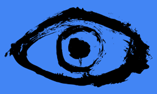

|  |
Eye-Bit Project Documentation
|
Functions | |
| def | run (cmd, stdout, stderr) |
| def | start_process (cmd) |
| def | start () |
| This function starts roscore, the subscriber node (listener.py) and the publisher node (Trecker_with6acord.py) in three parallel subprocesses. More... | |
| def Eye-Bit Project.start_ros.run | ( | cmd, | |
| stdout, | |||
| stderr | |||
| ) |
| def Eye-Bit Project.start_ros.start | ( | ) |
This function starts roscore, the subscriber node (listener.py) and the publisher node (Trecker_with6acord.py) in three parallel subprocesses.
| def Eye-Bit Project.start_ros.start_process | ( | cmd | ) |